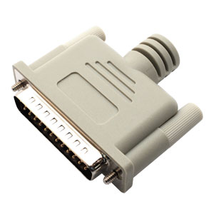

Parallel Port Test (x86 only) |
Top Previous Next |
|
Tests the parallel communications port connected to the PC. The parallel port to be tested can be selected from the Test Preferences window (see section 0, Parallel port preferences).
A parallel port loop back plug is required to run this test. These can be purchased from the PassMark web site (www.passmark.com) or you can make them yourself (see Appendix D).
Each test cycle corresponds to 500,000 bytes of data transmission. The number of ‘ops’ corresponds to the number of bytes sent and received. The duty cycle affects the time spent waiting between cycles.
The parallel port selected must not already be in use by the operating system (for example by the printer or other external device), for the test to be carried out. The default on-board Parallel port settings are that Port0 is named /dev/lp0 and corresponds to the physical IO memory address 0378.
 Parallel loopback plug Parallel Port This is the port name for the parallel port being tested. The port can be selected from the Test Preferences window.
Bytes Sent This is the number of bytes that have been sent to the parallel port.
Bytes Received This is the number of bytes that have received from the parallel port.
Errors This is the number of errors detected (see Appendix C, p.48).
Throughput This is the measured throughput for the port.
Compatibility issues You need to have administrator privileges to run this test. |